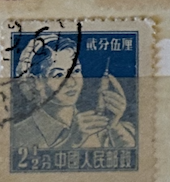
| SOURCE | TITLE| IMAGE MATCH | click to source page |
| eBay UK | 1900's CHINA STAMP | eBay UK | 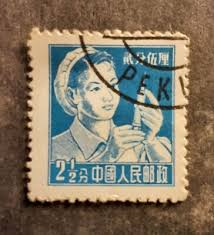 |
| ebid.net | China (Republic) 1955 - SG1648a - 2&1/2f blue - Nurse - used on eBid United Kingdom | 164253689 | 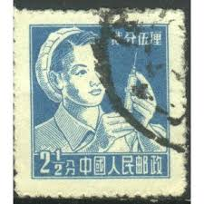 |
| eBay | JAPAN ASIA STAMPS USED LOT 1279AA | eBay | 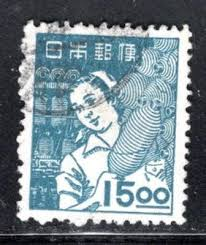 |
| Kenmore Stamp | Chiang Kai-Shek Inauguration - China 1945 Mint Set of 4 | 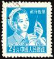 |
| eBay | Cultures, Ethnicities Postage Chinese Stamps for sale | eBay | 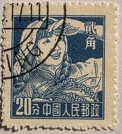 |
| Etsy | Vintage China People's Postage 2 1/2 Fen Stamp, Medic., 1955 - Etsy | 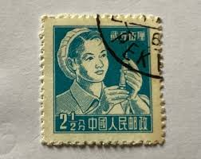 |
| Mercari | 1945 Japan (Imperforated) No.352 | Mercari | 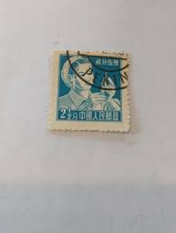 |
| Todocolección | o) 1948 china, sun yat-sen y plum flores, corre - Buy Antique stamps of China on todocoleccion | 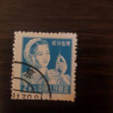 |
| eBay | CHINA PRC 1955 Sc#280 R8 20f Farm Girl Stamp MNH XF | eBay | 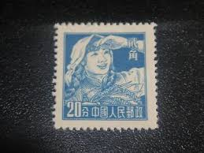 |
| eBay | JAPAN 1941-1950 DELIGHTFUL SET OF 6 RARE USED STAMPS ~ 500/30/15/8/5/2 | eBay | 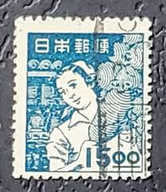 |
| eBay | Japan Girl | eBay | 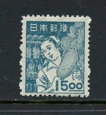 |
| eBay | Las mejores ofertas en Estampillas de Taiwán | eBay | 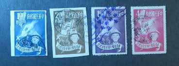 |
| eBay | Japan Japon Giappone F-VF Early Used Stamp A22P61F10911 | eBay | 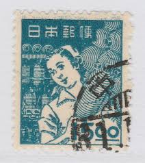 |
| eBay | China PRC 1955 Sc#280 - 20f Farm Woman Occupations - SG 1651 - Blue Used VF | eBay | 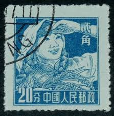 |
| Shutterstock | China Circa 1955 Stamp Printed China Stock Photo 80041447 | Shutterstock | 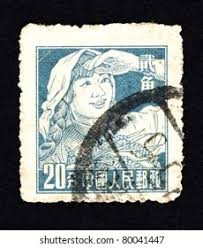 |
| Kenmore Stamp | Pagoda Hill, Yan'an - PRC #582 | 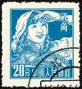 |
| eBay | Japan stamp 1948, Sc A213, 5y blue, used | eBay | 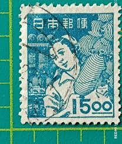 |
| eBay | Japan, Scott 431, Factory Girl, 1948-1949, used | eBay | 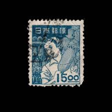 |
| BuyJapon | i-img640x640-1615699319xrl2xr276765.jpg?pri=l&w=300&h=300&up=0&nf_src=sy&nf_path=images/auc/pc/top/image/1.0.3/na_170x170.png&nf_st=200 | 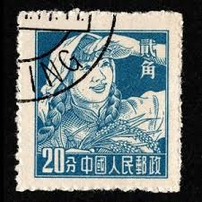 |
| Todocolección | china 1000,00 yuan, año 1950. - Buy Antique stamps of China on todocoleccion | 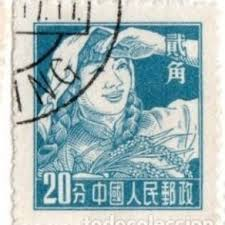 |
| eBay | Japan 1948 SC #431 Vertical Pair / MNH | eBay | 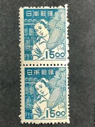 |
| eBay UK | French Indochina Air Mail Stamps for sale | eBay UK | 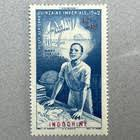 |
| eBay | 🔥Japan 15 Yen 1948 Sc 431 Used 🔥 Factory girl 🔥 | eBay | 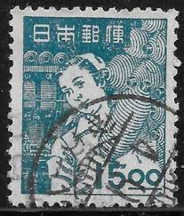 |
| eBay | CHINA - 2 USED STAMPS, 20f - LEFT STAMP ON LIGHT BROWN PAPER - 1955/1957. | eBay | 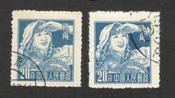 |
| eBay | Stamp Cover PRC CHINA to LENINGRAD USSR 1957 | eBay | 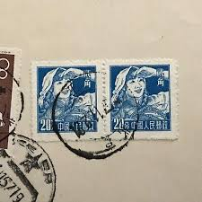 |
| Todocolección | china 1952 asian pacific peace conference. usad - Buy Antique stamps of China on todocoleccion | 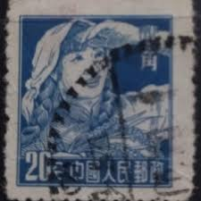 |
| eBay | TAIWAN SEA MAIL COVER | eBay | 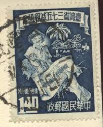 |
| Shutterstock | 6+ Thousand China Vintage Post Stamp Royalty-Free Images, Stock Photos & Pictures | Shutterstock | 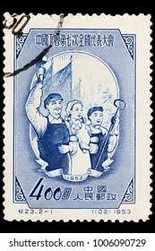 |
| eBay | 1962 S51 3-1,2,3 That Supports Heroes OG Stamps Have A Back Sticker | eBay | 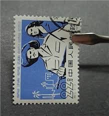 |
| Etsy | 1948 Girl With Paper Lanterns - Japanese Stamp - Necklace Postage Stamp Jewelry - Vintage Postage Stamp Necklace - Antique Bronze - Etsy Israel | 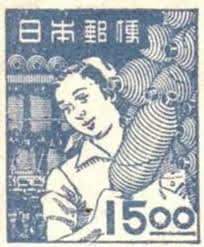 |
| eBay | C75 1960 Sino-Soviet Treaty of Friendship Collection Stamp Cancel XF OG | eBay | 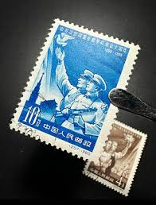 |
| eBay | Japan, Scott 434, Postman, 1948-1949, used | eBay | 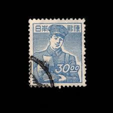 |
| eBay | Vintage stamps, Lot of 4, unused, Vietnam, Buu-Chinh, Cong-Hoa, 70 80 4d, 7d | eBay | 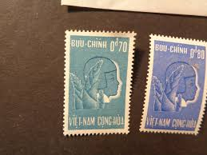 |
| eBay | JAPAN MINT stamps commemorative 【1919-1949 MNH】Japanese unused MB0027.jpg | eBay | 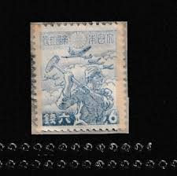 |
| eBay | Japan Japon Giappone F-VF Early Used Stamp A22P61F10888 | eBay | 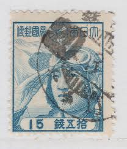 |
| eBay | China 1959 C64 10th anniv. of Chinese Young Pioneers | eBay | 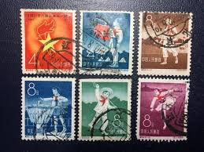 |
| eBay | C23 1953 The 7th National Congress of Chinese Trade Unions Collectible Stamps | eBay | 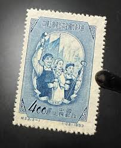 |
| eBay | N.350 -Vietnam- Five-Year Plan (1976 - 1980) | eBay | 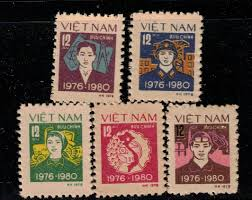 |
| eBay | China B19 used 1955 2v working man | eBay | 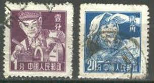 |
| eBay | People's Republic of China 1953, Scott # 185-186, MNH. Trade Union Convress | eBay | 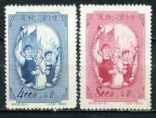 |
| eBay | AMAZING CHINA STAMP LOT IN HOLDERS, SYS, MILITARY, SPACE, SPORTS, ANIMALS & MORE | eBay | 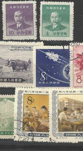 |
| eBay | CHINA PRC 1955 Sc#273/81 R8 Regular Issue 5v Stamp MNH XF SCV$34.75 | eBay | 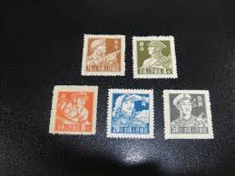 |
| eBay | JAPAN Sc#434 Watermarked 1949 Postman MNH | eBay | 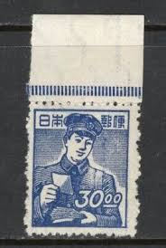 |
| eBay | 1962 Hong Kong Used Stamp Queen Elizabeth II 10c Lot Of 3 | eBay | 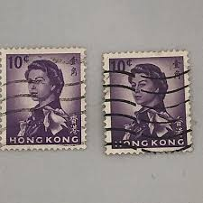 |
| eBay | Mint China Stamp | eBay | 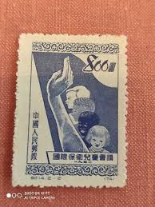 |
| eBay | Stamp Cover PRC China 1955 Rare revolutionary envelope | eBay | 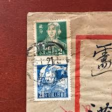 |
| eBay | China 1952 PRC $800 Child Protection Scott #137 Chengtu CDS VFU R164 | eBay |  |
| eBay | CHINA PRC 1953 C23 TRADE UNION CONGRESS (Scott 165-66) VF MNH | eBay | 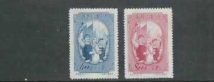 |
| eBay | JAPAN OCT 8 1961 16TH NATIONAL ATHLETIC SCOTT CATALOG # 736-37 MNH | eBay | 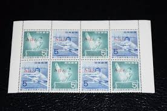 |
| eBay | 12363 China,MNG stamps set Nr:977-978 (Ivert numbers) | eBay | 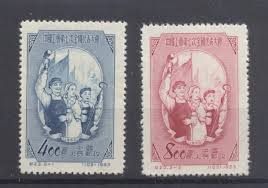 |
| eBay | 1969 China Hainan 52c cover to Singapore 海南瓊海寄新加坡空郵封| eBay | |
| eBay | China 1951 PRC C14 (Perf 13) 800 Yuan Original Postally Used!! Sc #137 VFU U37 | eBay | |
| eBay | Viet Nam 154 used | eBay | |
| eBay | Ryukyus Islands 1953-54 Stamps #27, 29-30 MNH | eBay | |
| eBay | cn54 China stamp PRC 1952 C14 Sc#136-7 Child Protection | eBay | |
| eBay | MANCHUKUO , CHINA , 1941 , CONSCRIPTION LAW , 4f STAMP PERF , MNH | eBay | |
| eBay | Stamps: China Album. 145 Stamps, Used & New. 1923 to 1966 | eBay | |
| eBay | China, Peoples Republic of - Scott 136-137 (1952) Mint NH VF C | eBay | |
| eBay | South VIET-NAM 1964 Complete series 4 mint stamps **. (4084x) | eBay | |
| eBay | EDSROOM-18836 PRC China 185-186 NGAI 1953 Complete Trade Union | eBay |